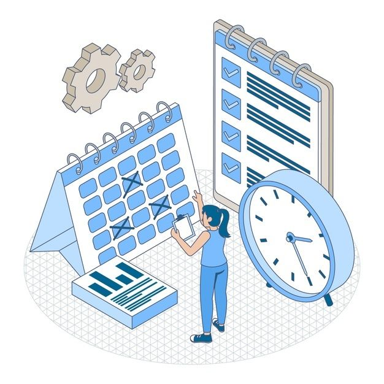
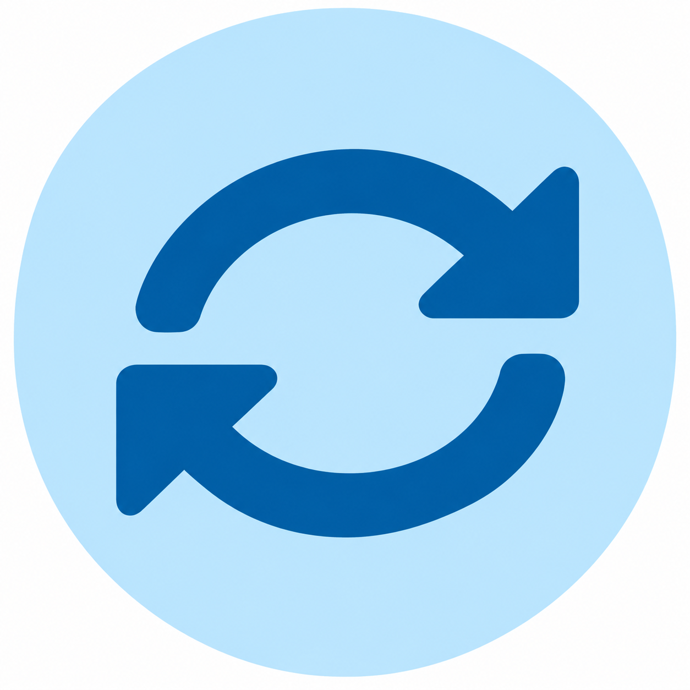
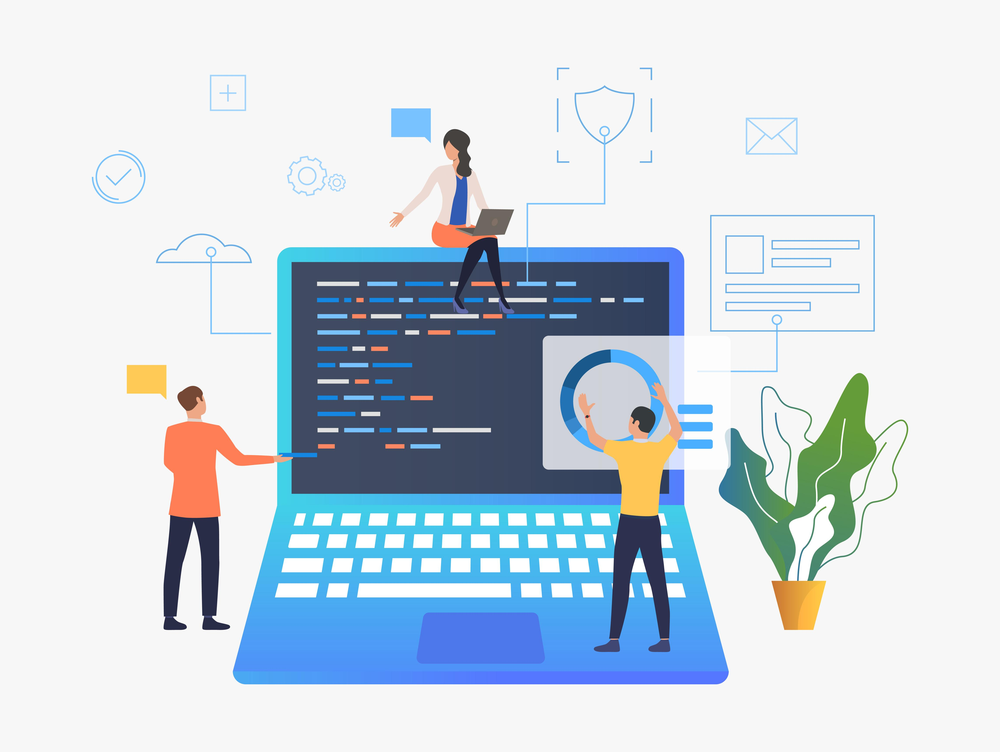

Personal Software Process
PSP ayuda a los ingenieros a planificar, medir y mejorar su trabajo individual, controlando tiempos, defectos y calidad.
Procesos que permiten mejorar la calidad, productividad y organización del desarrollo de software.
PSP fortalece el trabajo individual del ingeniero, mientras que TSP promueve la colaboración y el rendimiento de los equipos de desarrollo.



PSP ayuda a los ingenieros a planificar, medir y mejorar su trabajo individual, controlando tiempos, defectos y calidad.
TSP organiza el trabajo colaborativo mediante roles, responsabilidades y planes para desarrollar software de calidad.
Ambos procesos buscan reducir errores, optimizar recursos, mejorar el rendimiento y entregar productos de software de calidad.